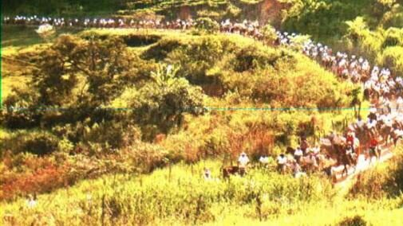

Caminhos que formaram o interior do Brasil
Homens que cortavam trilhas e estradas conduzindo mercadorias no lombo de mulas, e com elas, cartas, notícias e progresso.
Quem foram os tropeiros
Entre os séculos XVIII e XIX, os tropeiros atravessavam o país conduzindo tropas de muares, burros usados como principal meio de transporte de cargas antes das estradas de ferro e rodovias. Grande parte dos animais comercializados no Sul do Brasil tinha como destino a região das Minas Gerais, movimentando ciclos econômicos inteiros.
Mais do que transportar mercadorias, os tropeiros levavam cartas, boas e más novas, esperança e progresso. Sua passagem deu origem a ranchos de pouso que, com o tempo, se transformaram em vilas e cidades, entre elas o povoado de Ipoema, erguido em plena Estrada Real.
Da Estrada Real aos dias de hoje
O apogeu das tropas de muares
Tropeiros cruzam Minas Gerais na Estrada Real, ligando regiões produtoras a portos e centros de comércio. Ipoema se consolida como pouso de tropas.
Construção do casarão
É erguida, em Ipoema, a casa que mais tarde pertenceria ao tropeiro Sô Neco, hoje sede do museu.
Inauguração do Museu do Tropeiro
A antiga casa de Sô Neco é aberta ao público como museu, com cerca de 400 peças em exposição.
Seminário Internacional do Tropeirismo
O museu recebe delegações de diferentes estados para discutir a preservação da cultura tropeira.
Destaque na imprensa nacional
Reportagem do Correio Braziliense apresenta o museu e seu acervo de cerca de 400 peças a leitores de todo o país.
20 anos do museu
Uma série de comemorações marca as duas décadas de atividade do museu, dando início a um movimento de resgate dos elementos originais do espaço.
Projeto de revitalização
Prefeitura de Itabira e NATA firmam parceria (Termo de Colaboração nº 049/2024) para o novo Plano Museológico, Projeto Museográfico e a intervenção arquitetônica do imóvel.
Concepção do Museu Virtual
É desenvolvida a especificação técnica para levar o acervo e a experiência do museu ao ambiente digital, do qual este site é o primeiro passo.

Uma rota que ainda se percorre
A Estrada Real, antigo caminho que ligava as Minas ao litoral, continua viva em roteiros turísticos, cavalgadas e romarias que passam por Ipoema, mantendo o gesto dos antigos tropeiros de atravessar o território a cavalo, de pouso em pouso.
Conhecer o projeto de revitalização →